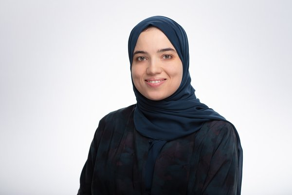
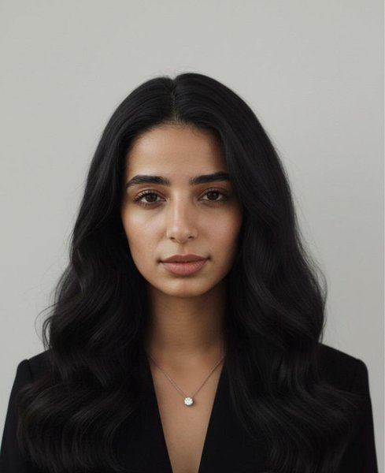
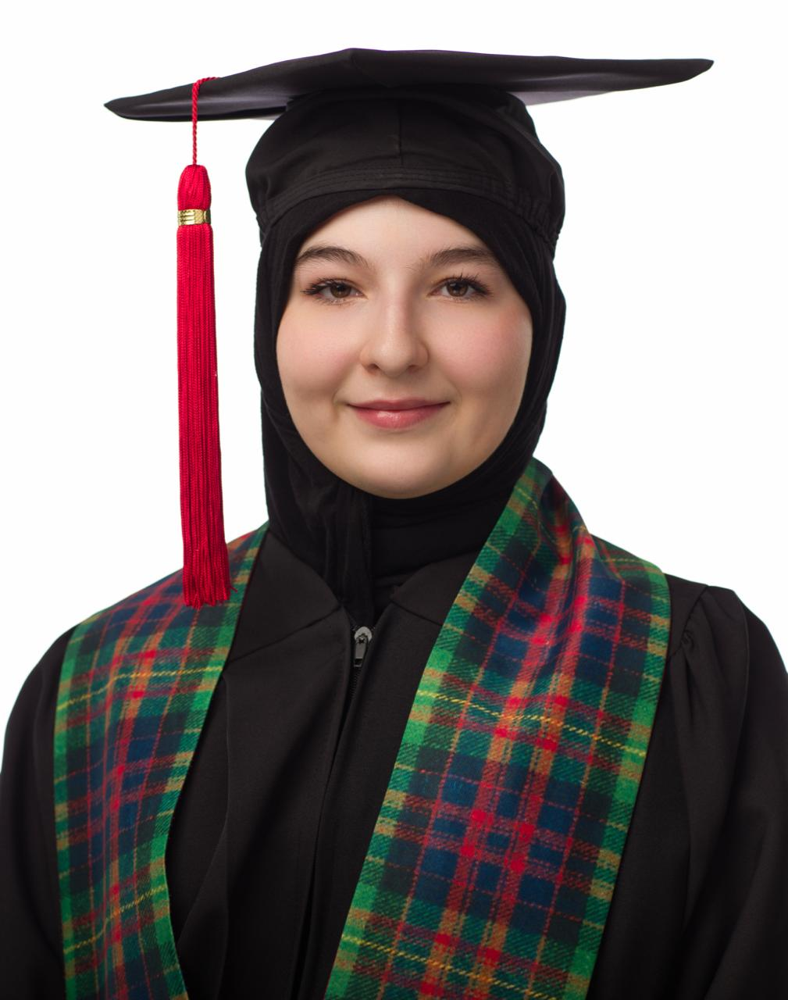
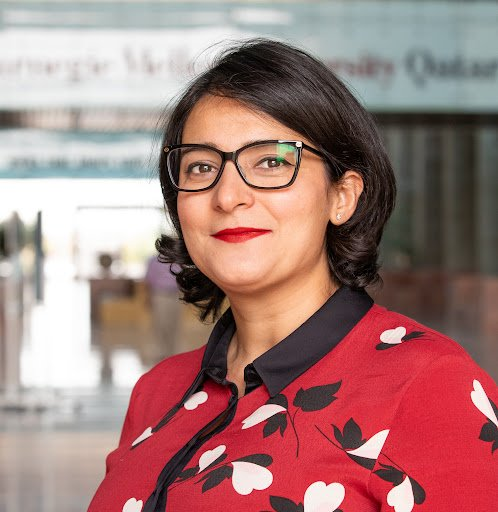
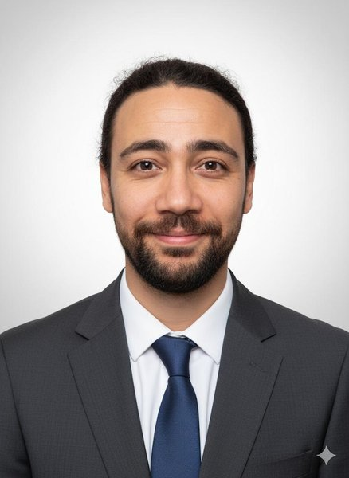

Associate Professor of AI and Media
Analytics · Director, MARSAD Lab
Research Staff
Md. Rafiul Biswas
Postdoctoral Researcher
Mabrouka Bessghaier
Research Associate

Shimaa Amer Ibrahim
Research Associate

Eman Sedqy Shlkamy
Research Associate
Rezwanul Islam
Senior Software Engineer
Abir Sidilemine
Junior Research Assistant

Lyna Bermak
Research Associate
Collaborators
Dr. Firoj Alam
PI · MARSAD AI Platform
QCRI

Dr. Houda Bouamor
Collaborator · MADAR, QALB
CMU Qatar
Dr. Georgios Mikros
Collaborator · Digital Citizenship,
Author Profiling
HBKU
Ahmad Kortas
Collaborator
Nour Elhouda Dalloua
Collaborator
Manar Bidani
Collaborator
Saif Chouaya
Collaborator
Salma Azouzi
Collaborator
Mohamed Rashad Rouine
Collaborator
Former Members
Kholoud Khalil Aldous
Postdoctoral Researcher

Kais Attia
Collaborator
MARSAD AI is
the specific social media observatory platform funded by the Qatar
Research, Development and Innovation Council (QRDI) under grant NPRP14C-0916-210015.
QRDI-Funded Team
Dr. Wajdi Zaghouani
Associate Professor of AI and Media
Analytics · Director, MARSAD Lab
Md. Rafiul Biswas
Postdoctoral Researcher
Mabrouka Bessghaier
Research Associate
Shimaa Amer Ibrahim
Research Associate
Dr. Firoj Alam
PI · MARSAD AI Platform
QCRI
Dr. Zubair Shah
PI · MARSAD AI Platform
HBKU
Dr. Younss Ait Mou
PI · MARSAD AI Platform
HBKU
Dr. Georgios Mikros
Collaborator · Digital Citizenship, Author
Profiling